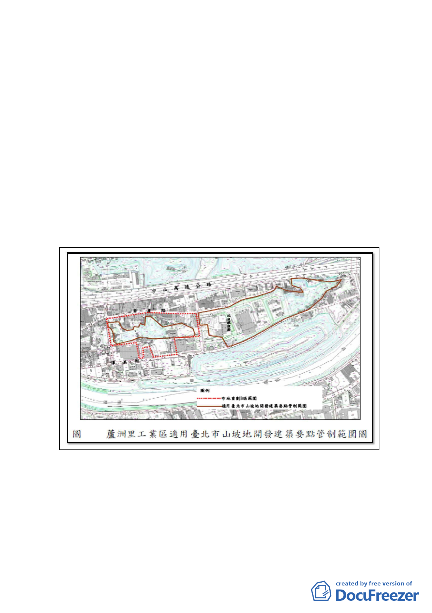

區B區特」），因該市地重劃範圍大部分土地皆為土地利用
潛力高及很高地區，且無環境敏感地；部分有高程土地坡度
雖超過30％，惟其面積僅佔全區24％，且緊鄰已開發建築地
區，周邊皆為平地。考量前開有高程土地非屬山系之支脈，
且範圍並不連續，故『應無環境安全之顧慮』，基於現況使
用情形及未來整體開發效益，故檢討調整山坡地開發建築要
點適用範圍。
(三) 惟於100年8月29日公告實施之計畫內並未詳細載明山坡地
開發建築管制範圍調整情形，造成法令適用上之疑義。基於
該市地重劃範圍係經本市都委會審議通過，考量計畫原意，
爰依都市計畫法第27條第1項第4款規定，辦理本計畫案，詳
細規範山坡地開發建築要點管制範圍，以補充原計畫案內容
使之完備。
-6-